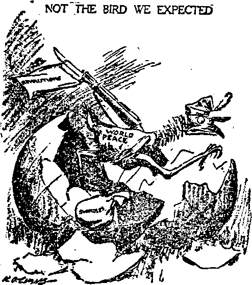

AMERICA is still at war with Germany, . technically, and will continue to be until the ' League of Nations question is settled. Various i reasons as to why the United States entered the " War have been assigned, which we summarize: ? . Representative William J. Graham has stated
_ that his examination of the . minutes of the Council of • ' National Defense “discloses , / the fact that a commission '» of seven [Wall Street], men, ■ chosen by the President
* . [October 11, 1916, twenty-
i ; seven days before his reelection]., seems to have de’ vised the entire system of I . purchasing war supplies, planned a press censorship, designed a system of food control, and selected Herbert 1 Hoover as its director, deter. mined on a daylight-saving 1 scheme and. in a word, designed practically every war * measure which the Congress subsequently enacted, and
, did all this behind closed doors, weeks and ' even months before the Congress of the United States dcelamd war against Germany”.
February 26,1917. in his address to Congress, President Wilson said: “I am not proposing or contemplating war or any steps that may lead to it”. On March 22, 1917, E. P. C. Harding, , President of the Federal Reserve Bank Board of the United States, issued a statement that “as banker and creditor, the United States would have a place at the Peace Conference tabic, and be in much better position to resist any proposed repudiation of debts”. On April 6, 1917, the war was duly declared.
TABLE of CONTENTS ne Laagaa at Nctfone Imbroglio_____C09
ne President and the r-—r«a sia
League and the Constltutloa____613
Senate and the t^«p,« ata
Labor and the T..me Almighty God and the League_______S20
"The Spirits In Prison"<121 ne Rights of Minorities______________C23
Juvenile Bible gtnrfv ata
Explanatory Note
ne shortage of paper still contlntres, but., beginning October first Tan Golden Aon will resume Its usual size and Increase the price fifty cents to cover the greatly Increased costs. This wQl make the price after October first 92.00 la the United States and J2.50 in Canada and in foreign territory. Meantime, however, subscriptions and renewals will be accepted, until September thirtieth indnsire, at the present price— gl.SOdomestic, and 92.00 Chnadaandforelga.
September 28, 1917, in a speech delivered before the American Bankers Association at Atlantic City, Mr. William G. McAdoo, then Secretary of the Treasury, said: “It has been repeatedly stated that the United States entered this war to maka liberty and democracy secure throughout the world. While this is true, it must be remembered that America entered this war for a more immediate reason” — the Kaiser’s bumptious order that America should cease trading with England and France. And, said Mr. McAdoo, if this order had been obeyed, “he would have destroyed by one stroke of his pen more than $3,400,000,000 of our commerce” and “would have accomplished more destruction on our farms, in our factories, and in our mines than he could achieve with all the armies and navies of the German Empire”.
The object of the war was to whip the 75,000,000 Germans and prevent the one-legged and
one-armed Teutonic survivors, after England, France, Italy, Belgium, Japan and Russia got through with them, from placing the remaining 1,600,000,000 of mankind under everlasting misgovernment and servitude. The war was also to be “a war to end war”. .
77ie President and the League
WHEN President Wilson, much against the wishes of many of his admirers, and contrary to the custom of the presidential office, left Washington to proceed to a foreign capital and there negotiate a peace on the basis of his famous Fourteen Points of justice and mercy, he enjoyed a prestige and a moral influence in the world unparalleled in history.
eign offices of European countries are filled with enough; but he exercised a restraining influence
Unlike American diplomatic practice, the for-men trained all their lives to say one thing and mean another, to scheme, plot, intrigue, deceive and undermine; and it was fundamentally impossible for men of that type to comprehend the reverence with which honest men everywhere regarded those Fourteen Points.
It was unfortunate for Mr. Wilson after he had stipulated as one of his Fourteen Points, that hereafter the peace of the world should rest not on secret treaties but on open covenants openly arrived at, that the covenants at Paris promptly began behind barred doors. No one likes to doubt that the President would have preferred to have these conferences held in the open, or doubts that the European foreign offices preferred to have them in secret. Yet Mr. Clemenceau, who did as much or more than any one else to wreck the President’s high ideals, caused word to be sent out that it was President Wilson that was responsible for the secret meetings.
The freedom of the seas, one of the widely heralded “points”, was never mentioned at the peace table, Britain having served notice that the subject must not be discussed. According to Dr. Dillon, of the London Daily Telegraph, none of the "points" were considered; no official minutes of the proceedings were recorded; communications were never issued to the press, and the five, four or three men shut themselves in a room and agreed on what disposition they should make of the interests of earth’s 1,600,000,000 inhabitants.
It is said to be a prominent characteristic of the President’s temperament seldom to accept guidance or advice. On this occasion, if never before or never again in his life, he had need to lean strongly upon ‘'the advice and consent of the Senate ’, as the Constitution requires in the exercise of the treaty-making prerogative; but he incurred the ill-will of the Senate by failure to do so. Premier Lloyd George, on the other hand, had with him in Paris a British imperial delegation which was virtually an informal senate; and he took no action without its approval. Lloyd George came with complete plans for everything, and it was Lord Philli-more’s plan for a league, modified by General Smuts, that served as a basis for the conference.
Without Mr. ‘Wilson the Conference would have been an even wilder orgy of land-grabbing and imperialism than it was, and it was bad and the United States came away from the peace tables with just what it desired—nothing. So difficult were the conditions that he had to meet, and. so dissatisfied was he at times with the mental attitude of those with whom he was trying to arrange a better world, that it is said on one occasion he nearly quitted the city in disgust He received some honors and gifts intended, no doubt, to lessen the sting of the disappointment which he must feel over his failure to produce such a covenant as he desired. The University of Paris conferred upon him the degree of "Doctor Honoris Tausea”, whatever that is; and the gifts presented to him were of considerable value.
The people of the United States were not really represented at Paris. President Wilson went to the conference after a most spectacular defeat in the 1918 elections. Apparently he had the thought of redeeming himself in the eyes of his fellow men by inaugurating the League and becoming a president, as-it-were, of the world. To that end he caused the League to be interwoven with the peace treaty proper. When he returned to the United States, Mr. Clemenceau and his colleagues separated the League Covenant from the treaty, but on his return Mr. Wilson insisted that they be put back together.
The Treaty of Versailles
ON April 2, 1917, in his war message, the President said: “We act not, to enmity toward a people, nor with the desire to bring any injury or disadvantage upon them, but only in opposition to an irresponsible government. We are, let me say again, sincere friends of the German people.” But these temperate words found no real fulfillment in the peace treaty.
Mr. Herbert Hoover, speaking at Johns Hopkins University February 23, 1920, said:
"The Treaty as distinguished from the Covenant was born in fire and suffering, a sense of wrong, the passions of revenge and fear that grew from them.”
Mr. Maynard Keynes, at the head of the British negotiators, next to Lloyd George, says of the treaty that it is a shameful, dishonorable and dishonoring document, and because it renders Germany prostrate, bankrupt and unable to rise again, ail Europe will surely go to ruin. He says that after the armistice was declared and Germany had been rendered helpless the world was treated to a spectacle on the part of the Allies of "a breach of engagements and of international morality comparable with her offense in the invasion of Belgium”. He declares further: “If I had influence at the United States Treasury, I would not lend a penny to a single one” of present European governments.
The President of the French Chamber styled the peace terms accorded to Germany, "France's glorious revenge”.
Lloyd George spoke of the terrible severity of the peace terms. He intimated that in the matter of information concerning prisoners^ identification and care of graves, disposition of colonics, settlement of debts, restoration of former treaties, resumption of commercial relations, navigation of German inland waterways, determination of frontiers, and forced confession of guilt for starting the war, every effort had been made to humiliate the German people.
General Smuts, whose plan for the League of Nations was used as a basis for the completed scheme, says:
"The promise of the new life, the victory for which the people have shed their blood and their treasure without stint, the fulfillment of their aspirations toward a new international order and a fairer, better world are not written in this treaty.”
Senator Knox, of Pennsylvania, though approving of the terms of the treaty, says that “it is a hard and cruel peace”.
Lord Robert Cecil, British member of the Peace Conference, and one of the strongest advocates of the League of Nations, says that “in the application of the principles of Christianity to international relations lies the onty solution of the problem”.
With these words of Lord Cecil in mind, how ominous are the comments of the Loudon Nation upon the conditions laid down to the former subjects of the Kaiser! The article says:
“And those peace terms ? Well, look at them again! Suppose they were presented to us. Suppose our cause were wrong to the last item, our fault like midnight, our community in ruins, the enemy within our gates, and we disarmed. Would we Britons submit? Would we? Not while one of us was left alive, and there was yet another stone in the road.”
Dr. Felix Adler, leader of the ethical culture movement, says:
"It is true that the darker forces of the world triumphed at Paris when the unjust treaty of peace was written”.
So terrible were the conditions laid down that the Buddhists and Shintoists of Japan, in proselyting among the Chinese of Shantung province, are pointing to the way other Protestant nations are maltreating Protestant Germany as proof that there is no truth nor reality in the Christian religion. The House of Bishops of the Episcopal Church, at its Triennial General Convention, held at Detroit in October, took note of this and by a vote of 58 to 44 repudiated a resolution approving the Peace Treaty and the League of Nations.
Not the Bird We Expected
THE one advantage that Germany gets out of the treaty, if she has sense enough to avail herself of it, is disarmament A complete disarmament would be a great advantage to her in her efforts to regain a footing and pay her indemnity and other colossal debts. The von Kapp fiasco in Berlin seems to show conclusively that the German people are sick of militarism.
The United States is in a predicament regarding the German ships that were seized here. Senator Hitchcock says that unless the treaty is ratified, "there is every reason to believe that Germany could wrest these vessels from us by perfectly peaceful means”, i. e^ by the courts declaring that the seizures were unjust The United States is in another predicament because it sold the property of Germans in this country, and unless the treaty is ratified it has no lawful means of withholding this money and using it as planned for the settlement of damages to
I
I i
I
I i
1 1
1 1
1
1
American property in Germany, Austria, Bulgaria and Turkey, and the payment to Americans of debts owing by Germans.
From Baltimore America*
“It Might Have Been”
IF there had been a real desire on the part of
Clemenceau, Lloyd George, Orlando and Mak-kino, prime ministers respectively of France, England, Italy and Japan, for a quick settlement on the basis of a sincere adherence to Wilson’s Fourteen Points a satisfactory peace could have been obtained in sixty days.
A mere statement by the United States, England, France, Italy and Japan that they would stand together for the defense of the liberties of the world, for peace and for right, would have been a powerful and valuable document. The League can do little more than give point to such a statement.
Europe did not seek a league of nations. The idea was pressed from the American end. On America’s side of the question it was natural enough, and is still natural, to wish that some kind of covenant could be made which would prevent a repetition of the World War, and make all wars difficult henceforth.
The World War cost the United States 100,000 lives and an expenditure of $26,000,000,000. The revenue law now in force exacts $6,000,000,-000 annually (with current expenditures of $9,000,000,000).
The loans to America's allies total $10,000,000,000. If America goes into the League as originally drawn, and fails to measure up to what is expected of her in keeping the League rules, those who have borrowed these vast sums might refuse to repay them as a penalty, and could use the League to enforce their decision. The League also provides for a general boycott of any offending nation, the most effective war measure short of actual invasion of a country.
Much has been said about the mandate principle, but the traditions of America would make it impossible to apply the mandate principle as illustrated in the past activities of the East India Company, or the Hudson Bay Company, or the South .African Company. As America has been unaccustomed to such colonial activities it would be more difficult to raise armies here for that purpose than in England.
The fact that the Administration anticipated trouble from an effort to put the League plans into effect may be shown by the proposed increase of the peace army from 80,000 to 500,000 men, and the proposition to build the greatest fighting fleet in the world, with sixteen-inch guns, and manned by 250,000 sailors, at an expense of $913,000,000 at one time. The statements that the League was supposed to make war a thing of the past were tempered by the knowledge that at the time of its announcement the United States had in process of construction four battleships of 42,000 tons each.
The Women's International Conference for Permanent Peace, held at Switzerland in the summer of 1919, condemned the League of Xa.-tions in the following language:
“By guaranteeing the fruits of secret treaties to the conquerors the terms of peace have tacitly sanctioned secret diplomacy, denied the principle of self-determination, recognized the rights of the victors to the spoils, and created all over Europe discords and animosities which can only lead to future wars. By demanding disarmament from one set of belligerents only, the principle of justice is violated and the rule of force continued.”
Senator France calls attention to the fact that the population of the self-determinative nations within the League is only one-fourth of the population of the world, and that outside of it are 1.200.000.000 Germans, Russians, Turks, Chinese, Hindus, and Negroes that contain within themselves possibilities of another league
( -
r .
■ capable of destroying the Paris League with all it contains.
The world would better be summoned in a new* council if it wishes a lasting and useful league of nations. There should be a different basis of representation agreed upon, one representing the peoples of earth and not their politicians.
The practical showing of the League to date is that it puts the whole world under the arbitrary power of England, France and Japan, with three or four men dictating to the entire world. It is just this kind of centralized power that brought on the World War; it bodes no good to the liberties of the masses of mankind to have so much power vested in so few men.
Why America Halts
THE American Government, prior to the present administration, stood in much the same relation to the American people that the father of a home occupies toward his children. It is obligated by its basic law to provide large lilv-erties of thought, speech and action, and is loved because of this; and the people who left the execrably governed countries of Europe to find a haven of refuge here will not willingly put the American people back permanently into the hands of a league of the land of tyrants from whom they escaped, nor (latter themselves too strongly with the belief that a perfect plan has been suddenly devised whereby nations and peoples differing in beliefs, standards, customs, colors, languages, religions and governments, can work harmoniously for the common good.
In the League of Nations the white races of the world would be in a minority in voting power, and largely in the minority as to the total population represented; and it remains to be proven that the relegation of the white races to the rear would be for the general welfare.
The Grand Army of the Republic, veterans of the Civil War, at their annual convention at Columbus, O., adopted a resolution opposing the League as jeopardizing American independence.
Millions of Americans believe—with all the Presidents from Washington to Grant—that this nation should have gotten out of Europe at the time of the armistice, free and independent, as heretofore, master of its own destiny, and able to work for the benefit of mankind without taking part in the age-long squabbles and intrigues of Europe and Asia, or becoming the guarantors of a world that was remodeled '* in secret by men whose diplomacy is far below the American standard of honor and fair play.
It is likely that if the United States had ratified ' $
the League when first presented, it would by this time have 250,000 men in Europe, involving an additional financial burden of $500,000,000 to $1,000,000,000 per year. . s
The discussion of the League in the United States Senate centered about Article X, in which \-the members of the League undertook to pre- - -serve the territory and existing political independence of all members of the Leagu§. It was the contention of the friends of the League that t nobody supposed that military force could be used without the consent of the United States Congress; but an increasing number have come to share the view that the League would have * no more effect in keeping the United States out £ of war than did the slogan, “He kept us out the war”, of the last presidential campaign. i
And then there are the financiers! . They re- ; member what prodigies of valor were performed by the American troops in the Argonne; and they reflect, *What wonderful collectors of in- ' terest on bonds those troops would make!’ But they do not reflect that they themselves would not be ■willing to go to the Far East or into the ice and snow of Siberia; and at heart they are j not anxious that their own sons should go.
Soldiers who actually saw the firing lines are strongly opposed to any league or alliance with other powers. The American Legion, an organization composed entirely of officers and soldier boys who participated in the World War, has never ventured to bring this subject to a vote. 4
League and the Constitution
NEITHER President nor Senate of the United States possesses the power legally to transfer to a super-government the rights of the sovereigns of the United States, who are the enmnmn people. Any treaties that are executed must be in harmony with the United States Constitution, or be made so by amendments to that Constitution before they can become effective. The citizen-sovereigns of the country can transfer their sovereignty to a super-government, if they choose; but their elected servants and representatives cannot do so and the only proper way to settle the question is at the ballot box, by a special election. It is the business of French
statesmen to look after France, of British statesmen to look after Britain, and of American statesmen to look after America. No one would suggest that a man should destroy his own family in order that he might divide his affections among the members of other families, and no one should expect America to surrender to a council of European politicians Amprinan judicial, legislative and executive power.
The London Times says: “There is a deplorable tendency to cast the major responsibility for Europe’s troubles on America’s shoulders” —to use the assets of the United States to liquidate European debts.
Ability to get into the League does not imply ability to withdraw easily. Virginia was one of the several states that entered the Union of the United States of America with the express reservation that she could withdraw at any time she saw fit During the years 1861-1865 she attempted to exercise these rights which she had expressly reserved to herself; and the decision that she had lost the right to withdraw was arrived at upon the battlefield.
The League provides that a nation may withdraw from it only when the League itself votes that the one that wishes to withdraw has discharged all its obligations to the League; and the nation that wishes to withdraw is excluded from the privilege of voting upon the question. The Senate attempted to rectify this matter by a reservation. But this and other reservations calculated' to preserve the independence of the country had no more than passed the Senate before the Parisian and London press were discussing the advisability of going ahead with the inclusion of the United States in the League, and later refusing to recognize any of the reservations under threat of war. Expulsion or withdrawal of any strong nation from the League would be almost sure to result in another war.
Senate and the League
MR. Wilson’s viewpoint changes. Years ago he wrote: “No government can be administered with the highest efficiency unless there be close cooperation and an intimate understanding between its administration and its legislature"; and in referring to President Polk’s course in beginning a war without consulting Congress and undertaking to conclude peace without consulting the Senate, he declared that Polk’s course was due to his lack of patriotism, hi« natural love of secrecy and his aversion to consulting other persons. These are the charges now lodged against himself.
The Senate let it be known in March, 1919, that a number of their body, sufficient to defeat the treaty, were against the treaty and the League as then projected. Subsequent to that date there was no good reason to believe that the League would be adopted by the American people without careful discussion and probable revision of its terms. It would have been wise for the President, even at that late date, to revise his entourage and include among his counsellors members of the Senate. •
On his return to the United States the President committed the error of assuming that the League as he brought it must be accepted without investigation, analysis, amendment or reservation. This made the Senate the more determined to subject the plan to the closest criticism; and at one time there were more than fifty proposed changes in its terms. These changes were not the work of enemies of the idea, however, but of friends, of those who really desired to save the good features of the Covenant. At least eighty of the ninety-six senators are in favor of some sort of league, but are unwilling to concede that the work at Paris was infallible.
The League Covenant was first presented to the Senate July 10, 1919, and has since been the chief subject of national discussion. A few months after the debate began it leaked out that the Secretary of State had said that if the Senate knew what the peace treaty let the country in for, it would never stand for the contract. The Senate seems to have come to that conclusion. —
Reservations were adopted preserving the limitations of armaments, open diplomacy, the settlement of national differences peaceably, and leaving the obligation of the United States to participate in international crises to the discretion of Congress. Lord Grey, British Ambassador, stated that Great Britain would accept these reservations. Ribot, the former premier of France, stated that all the Allies would accept them. Europe would be glad to have the country join on its own terms, the same as Switzerland has done.
Senator Owen, a staunch supporter of the President, said in a speech on the floor of the Senate:
■ "I do not believe there is a single Democratic senator who would net vote for this resolution of ratification (with reservations) if it were not for the belief of such senators that the President of the United States desires them to defeat the resolution of ratification now pending”.
The treaty was rejected in the Senate the first time on November 19 by 41 to 51, and again on March 19,1920, by a vote of 12 Republicans and 23 Democrats against ratification and 28 Republicans and 21 Democrats for ratification. To ratify, the vote must stand 56 for to 38 against. There are 32 senators to be returned next November; and even if all of them are elected on a pledge to vote for the treaty unamended there would not even then be two-thirds in favor of it without change. It follows then, as a matter of course, that th$ treaty will never be ratified in its present form.
There are several things that the President can do—return the treaty with acceptance of the reservations demanded by the Senate, return it in its original form, or make a new treaty. He has refused to accept the Senate’s proposed peace by proclamation, or to repeal the war laws, with their extraordinary powers for the executive branch of the government
China and the Treaty
IN HIS speech to the Senate, January 22,1917, President Wilson wisely and truthfully said: “No right anywhere exists to hand peoples about from sovereignty to sovereignty as if they were property”. In our issue of October 29,1919, we have written upon the transfer of Shantung, with its 38,000,000 Chinese republicans, to the sovereignty of the Japanese emperor.
It is not generally known that one of the clauses of the treaty between China and Germany under which the sovereignty of Shantung was originally wrested away from the Chinese by the German imperial forces, was that the rights of Germany were unassignable and non-transferable, and that if in any way the rights of Germany should be terminated they should at once revert to China. When German power was broken in Shantung, therefore, that was the full end of the Shantung lease. Japan possessed not a shadow of right to that lease.
The way in which China was induced to enter the war on the side of the Allies was by the assurance of the American Ambassador at Tokio that if China would break with Germany the United States would uphold her at the council table in her effort to regain control of the heart of China, the Shantung province, then in Japanese hands. At the time the Ambassador made that statement the cables were not working, but the United States did not until after the war was over notify China that she would not back up this promise.
While Chinese republicans were digging trenches in France, under the guns of imperial Germany, the secret treaty was made between England, France and Japan, ceding to Japan the German "rights” in Shantung, which had ceased to exist in the Fall of 1914. This secret treaty was not made until the early part of 1917, two and a half years after the Japanese troops had forced the German surrender at Kiao Chau.
Japan is steeped in German ideas, and regards war as an industry. It is by war that she has gained her vast territories in Korea, Manchuria, Formosa, Caroline Islands and more recently in Eastern Siberia and Shantung; and there is little doubt that she is planning the subjugation of all Northern Asia, with a view of using for that purpose the millions of Chinese, even as Germany and Austria made 26,000,000 Slavs fight their battles for them, even while those Slavs hated the Teutonic masters for whom they fought.
Japan refused to enter the League of Nations unless guaranteed the right to retain Shantung; and although Lloyd George and Clemenceau would have been glad to be freed from the secret treaty, and put into Wilson’s hands the power to decide whether or not the treaty should be cancelled, the President was so eager to get Japan’s consent to join the League that he supported the agreement.
Japan delivered a verbal promise to the Council of Five in Paris last Spring that as soon as the League became effective she would set a definite time for the political and military evacuation of Shantung. But her good faith went bankrupt twice over Korea, which she annexed after (1) assuring the world that she had no intention of establishing a protectorate over it and (2) after assuring the world again that she had no intention of annexing it Under the Japanese rule over Korea, a nation thousands of years old has been deprived of its independence, free speech and learning have been suppressed, modest Christian girls have been
inarched naked through the streets, and Christian men have been crucified. Meantime the Mikado pleads for the League, urges his subjects to abide by the principles of universal justice, and agrees with other imperial malefactors “to respect and preserve as against external aggression the territorial integrity and existing political independence of all members of the League". -
France and the League
THE French never wanted the League and shaped it to their ends of defense, revenge and aggression. Premier Clemenceau made no pretense at any time of considering himself bound by the Fourteen Points and, it is said, never read them until after the armistice was declared, when he said cynically, “Now bring on the Fourteen Points”.
That France never entered into the original spirit of the League is manifest from the fact that, contrary to its own provisions, she demanded a separate alliance with Great Britain and America against Germany and now has under process of construction the largest army she has ever had.
Italy and the League
IF the French were cold on the subject of the
League the Italians were frigid. They went into the war against their former allies, Germany and Austria, as a result of a cold-blooded bargain for Fiume and other possessions on the eastern shores of the Adriatic Sea. It was their intervention that saved the Allies from defeat in the second year of the war. Now they are unable to appreciate the nice distinctions of morality by which the Allies today deny to them what they promised in secret to induce them to enter the war, and when they grant to Japan what was also promised in secret two and one-half years after Japan had grabbed the coveted territory.
Reasoning that Italy made a mistake in not grabbing first and negotiating afterward, the same as Japan had done, the aristocratic poet D'Annunzio seized Fiume while’ the dispute was on, and still retains control of it At Fiume the Italians are in a minority in the city population and the Serbs hold the back country. It is Serbia’s natural outlet to the Adriatic. Like the Kaiser, D'Annunzio is alleged to give <yviri«>n<^ of having trouble with evil spirits. A dispatch says: “Ue thinks himself above all laws and proclaims that he is led by divine inspirations”.
Britain and the League
WHILE there was-no spontaneous or widespread support of the League idea in Britain before President Wilson went to Paris, yet Lloyd George made the statement that “the Allied governments are pledged to the League’s noble ideals”. Would that they had been! The Manchester Guardian, speaking of the efforts of the British statesmen at Paris, said: .
“It seemed perfectly safe to press to the utmost limit, because, no matter how top-heavy the structure was created, America was there to steady it, and Mr. Wilson was there to hallow it”.
Although one of the Fourteen Points of President Wilson was “the freedom of the seas", which was something that Britain denied to the United States from the first day that she declared war upon Germany, and something she has not yet restored, Ker statesmen announced without hesitation that she proposed to maintain her supremacy upon the waters of the seven seas. This killed the spirit of the League from the start
The London and Manchester Daily News says:
“Europe needed food, and work, and peace to heal its wounds. But it was denied these things. Its wounds were kept open and inflamed. Six precious weeks were wasted on the 'Hang-the-Kaiser' election in this country, an election in which the mind of the nation, instead of being moved to. great issues, was saturated with the basest appeals to revenge and ignorance; and we emerged from that saturnalia to the discussion of peace with the atmosphere poisoned by false issues and shameful commitments. We have never recovered from the indelible crime. It involved us in the French peace of revenge instead of the American peace of healing; and its fruits are scattered over Europe in famine, disease, revolution, war, and all the miseries of a great continent collapsing deeper and deeper into barbarism.”
Austin Harrison, editor of The English Review, says:
"The rejection of the Peace Treaty by the American Senate is by far the most momentous event since the armistice. The bitter truth is simply this: Politicians at Paris made a peace which is economically unworkable. The action of the American Senate will, in the end, be beneficial to Europe and to the world. This warning to return to sanity, coming from the quarter which now economically controls, must therefore be heeded.”
The famous English author, H. G. Wells, writes similarly:
“When the principal powers of Europe can agree upon • scheme that is not simply a plan for the partition of Asia and Africa among themselves—and by 1922 they ought to be chastened to the pitch of such an agreement —I have no doubt that the American people will be found ready and willing to come into a real brotherhood of nations”.
The noted English author, Jerome K. Jerome, says:
“The League of Nations has come into the world stillborn. The sooner its poor, unsavory little corpse is buried and forgotten the better for the health of Europe. Its sponsors, holding their noses tight between their . thumbs and fingers, invite.ua to-the christening. One dr two of them are honest men. ''They hoped for • new Messiah. They seen to have persuaded themselves that by much shouting and prostrating of themselves they can raise it from the dead. The League of Nations was founded upon violence. It was built up of lies cemented by hypocrisy. Its cornerstone is injustice.”
The London Herald says of the League:
“There is no honor left for any of us. The League of Nations is a body without a souL President Wilson has been beaten. He forced public acceptance of his ideals on the other powers, but they have beaten him secretly. He compromised on essentials, and therefore the details have gone astray. From the moment he abandoned the first of the Fourteen Points he abandoned them all”
The London Daily News says:
“Sightly or wrongly loven of world peace have got it into their heads that the allied governments and many of our leading men do not have, if they ever did have, any real faith in the League which they have persistently damned with faint praise”. •
• The London Standard says:
“A League of Nations in which no one believes, but to which lip service is paid by everybody, is simply a sham, and a most dangerous sham. The League, in fact, is becoming a jest and^is treated by many public men as'such.” .
The London Morning Post says the League should be scrapped as a failure.
In the New York American Senator Johnson quotes Lloyd George to this effect: “The United States must enter upon foreign war automatically if England calls”. Probably Lloyd George wishes the statement were true; for it is a groat undertaking for a little country like England, with oidy 34,500,000 people, to govern 650,000,000 people now tributary to her.
Great Britain as a result of the war added 800,000 conquered, seized or “mandated” square miles to her territory; there being little thought by any that the “mandated” countries will ever regain their liberties. That this was the thought running in the minds of the statesmen that are guiding Great Britain’s affairs is indicated by the fact that after the adoption of the League Great Britain laid plans for an army of 925,000 men to be obtained by conscription, and abandoned these plans only in the face of the .threat of a general strike, when it was agreed to restore the army to its pre-war size. •
British troops are less and less enthusiastic over the imperialist plans which have always been so much a part of British policy; and it would have been far better for Britain in the end if a just and generous peace had been arranged than the scheme outlined in the League of Nations.
The League and India
WILL India’s membership in the League be a real membership that will do her some good or a paper membership that will be used against her best interests?
A. J. Wilson, in The Fortnightly Review, March, 18S4, states:
“In one form or another, we draw fully £30,000,000 a year from that unhappy country [India], and then the average wage of the natives is about £2 per annum;, less, rather than more, in many parts. Our Indian tribute, therefore, represents the entire earnings of upward of six million heads of families, say of thirty millions of people. It means the abstraction of more than one-tenth of the entire sustenance of India every year.” • '• ...
Keir Hardie stated:
“The amount of taxes raised direct from the peasant" is from 50 per cent to 75 per cent of the value of the yield of the land, in addition to which they have to pay local cesses, and various other small items, so that probably not less than 7 5 per cent, of the harvest goes in taxes. It is this fact which keeps the people of India in a condition of hopeless grinding poverty.”
The London Daily Herald, in June, 1919, said: “About half the people of India get only one meal a day and that is not a sufficient meal. The average life of an individual is only 23 years; in England it is 40 years and in New Zealand 60 years.
The per capita expense for the education of natives in the Philippines is two hundred and sixty-six times that devoted to the education of the natives in India, with the result that iu twenty years’ time illiteracy of the Philippines has been reduced to 5G%. In India, after 140 years of British rule, only 7% of the natives can read or write.'
Labor and the League
™HE British labor party constitutes a body of J- the most intelligent, progressive, and noble-minded men in the world. Directly, or by their leaders, they have issued manifestoes regarding the League of Nations embodying the following declarations:
“We, the undersigned, dedare our most emphatic repudiation of the action by which Germany has been forced to put her signature to what all sane men know is destined to be but a scrap of paper. Germany has been forced to sign a peace pledging herself to hand over enormous indemnities and at the same time to give up those mineral and agricultural resources which alone would have made possible not only the payment of indemnities but the barest sustenance of millions . of her own people. Germany has, in fact, been forced to promise the impossible. Had she not done so, the food supply on wliich the lives of her people depended would have been ruthlessly cut off. In other words we put the women and children into the firing line, and the Germans had to give in. In any event one of the first-fruits of the Peace Treaty will be the massacre of babies, who by the cession of cows are to be deprived of their milk. Thousands of others will perish as their fathers find themselves deprived of the means of earning a living. Labor has had no part in the making of the treaty. It is a settlement opposed to every ideal for which labor stands.” '
“The League of Nations, in order to establish and maintain world peace, must be based on direct representation from parliaments, and not merely from governments, so as to secure and maintain its democratic character and prevent its being used as a buttress to executive authority. It should impose upon the signatory nations the responsibility of holding colonies and dependencies in wardship for the purpose of training and educating them in political qualities that will enable them ultimately to practice self-determination, and, in accordance with the proposals in the labor war aims, this provision should apply to all such colonies and not merely those lately under German control.”
The French Federation, of Labor, taking note of the fact that no workingman, no woman and no representative of the colored races were among the commissioners that sought to put the world in order, has condemned the League on the ground that it is a project offered by diplomats and is “not the society of nations such as was prescribed in the Fourteen Points of President Wilson**.
The League contained provisions for an International Labor Conference, to which the United States would send four delegates, Great Britain and the colonies twenty-four, and other nations four each. The decisions of this Labor Conference were to become binding upon all the nations having membership in the League, under threat of boycott.
The first meeting of this conference took place at Washington in October, but accomplished little because the League itself was not yet in effect. President Gompers of the' American Federation of Labor chose all of the American delegates, modestly assuming to speak for the 40,000,000 workers of this country.
Russia and the League
IT was President Wilson who said that the
Allies’ treatment of Russia would be the acid test of their good faith. This was before the unauthorized-war upon that country in which 222 American boys were killed. Here is a people, one of the greatest nations of earth, with 180,000,000 population, that has recently overthrown a monarchy and is proceeding to govern itself along lines of its own choosing. That its plans of government may be impractical and may result in failure is none of the League's business. Russia has offered, if granted peace, to pay the interest on all outstanding bonds. What more do financiers want? Apparently they want a great deal more; for they have raised large sums of money to publish and circulate literature to try to offset the literature which is said to be put out by the Russian Soviets, and which, they say, “threatens to convert the whole world into thinking that these Russians have hit upon a good plan of government”. And they think this would be dangerous. Maybe so—but who made the promise to let them alone and let them see what they could do!
In February, 1919, the statesmen of the Peace Conference said that they w’ould not permit themselves to be forced to interfere in Russian internal affairs and that Russia was free to govern itself in its own way. In October the same statesmen declared a blockade against it—what Mr. Lloyd George called a “death cordon”. Just what the object of this death cordon is has been concealed. If one dares suggest that these harassments of Russia are done, possibly, at the
suggestion of “big business”, and maybe at its command, one is called by names which chiefly betray the ignorance of those who use them.
One thing that withheld public confidence from the League was that when Poland made war upon Russia the League took not a move to stop it, and it is currently reported that the men, money and munitions for Poland’s war were supplied with the knowledge and approval of the imperialists' back of the League.
Persia and the League
A S soon as it became apparent that the prin-cipies which President Wilson advocated would not be incorporated in the League, England seized Constantinople—the door to the Near East-—having previously sent an army to put Persia under a British protectorate. The Persian Government was loaned £2,000,000 at 7%, and signed an agreement to accept “whatever expert advisers may be considered necessary for the several parts of the Persian administration”. This looks like the end of Persia’s “self-■ determination of peoples”, to quote an expression in the Fourteen Points.
The simple-hearted and the simple-headed may think that this administration of Persia is only temporary; but thinking people do not forget that England annexed Egypt after three British prime ministers had pledged the honor of Great Britain never to do it. After the uprisings in Egypt, due to the President’s refusal to receive representatives of the Egyptian par-■ liament, a number of British army units in Egypt held meetings and decided that they wanted to go home on the first ship rather than stay and shoot unarmed men, women and children ; and home they went. The Egyptian representatives merely wanted to see the President in- order to remind him that they too fought against Germany in reliance upon his announced principle of "self-determination of peoples”.
Honesty and the League
IN his speech at Manchester, December 30, 1918, President Wilson said:
“There is only one thing that can bind peoples together, and that in common devotion to right”.
It is too bad that the sponsors of the League did not have that motto before them all the time they were deliberating.
The League-was to remove economic barriers between nations and it has multiplied them. . There were to be no more secret treaties, but there are more of them than ever. The anna- . nients were to be reduced, and they are larger.
Serbia was to be given a port, and she has none. Everything was to be done in the open, and u everything of importance is done in secret. Only two out of nine of the last meetings were public.
There was to be a “free, open-minded, and abso- p
lutely impartial” adjustment of all- colonial ’ . claims, but there was none. Germany’s colonies , were taken away and given to England and that was all there was to that. The world was to * be safe for democracy. The German colonies ' were misgoverned, no doubt, though probably not as badly as Congo colonies of at least one of the Allies—Belgium. |
It was announced that the object of the
League of Nations is to keep justice between
nations, but that does not square with the clause
conference with one honest man solemnly agreed
to protect one another, and that the honest man shall also protect them against any despoiler t in the future. This is first cousin to compound- , ing a felony. ...
The League of Nations does not represent the nations of the world. It placed and leaves all the power in the hands of a few countries. '
The way the matter was broached, there was
to be one American in the council; but there is <
no one man in the United States or in the world capable of speaking for 106,000,000 of the most-intelligent and progressive people of earth. If it takes the whole Congress of the whole people to decide America’s domestic matters, it is even more important that they, or their representatives, should decide her world policies. Anyway, it looks a trifle incongruous for the United States to enter an assembly where its one vote is counted on a par with the vote of Hedjaz, Haiti, or Liberia, insignificant settlements of Mohammedans and other backward peoples.
The League was not founded on principle and . contains no expressions of mutual penitence, forgiveness or reconciliation. If it had been founded on principle it might have become a great reality.
The League has done something. It has held
020
meetings January 16 at Paris, February 11 at London, March 13 at Paris, April 9 at Paris and May 17 at Romo. It has approved a plan for an International Court of Justice to consist of twelve of the world’s most famous jurists, including Lord Phillimorc, of England, who drafted the original Covenant for the League of Nations, and Elihu Root of the United States, counsel for the liquor interests.
The membership as of March 20 was Argentina, Australia, Belgium, Bolivia, Brazil, British Empire, Canada, Chile, Colombia, Czechoslovakia, Denmark, France, Greece, Guatamala, India, Italy, Japan, Liberia, Netherlands, New Zealand, Norway, Panama, Paraguay, Persia, Peyu, Poland, Salvador, Siam, South Africa, Spain, Sweden, Switzerland, Uruguay and Venezuela. '
Cuba, Ecuador, Haiti, Jugo-Slavia, Hedjaz, Honduras, Nicaragua, Portugal, Rumania and President Wilson have signed, but no ratillca-.tion has yet occurred; and Georgia, Iceland, Luxembourg and San Marino have made application for membership.
Almighty God and the League
IN a telegram May 9, 1920, the President . said:
■" “It is time that the party should proudly avow that it means-to try without ilinching or turning at any time awoiy from the path for reasons of expediency, to apply moral and Christian principles to the problems of the world”.
Yet it is a curious commentary on the fate of the League that the President went away on the greatest task, in some respects, that any man ever undertook, without any public acknowledgment of his dependence upon God, or without any request to anybody to seek Divine guidance for him. The Peace Conference at Paris deliberately refused to incorporate in the document provisions for protecting the missionaries in their work and when some Christians then in Paris sent a written request to President Wilson that the Peace Conference be opened with some form of Divine worship or of prayer to Almighty God for guidance, the reply was sent back that there was no time for religious services. The Covenant was a Godless one. and the Peace Conference deliberately made it so. Whether this was done to please the heathen emperor of Japan, and the rulers of the other heathen countries that were invited to partici-
*F»
r
pate in the League, does not matter. It was a strange proceeding.
The Niroku, a Japanese newspaper, says:
"The imperial family of Japan is as worthy of respect
as God, and is the emljodiment of benevolence and jus-
tice. It is the parent not only of her 60,000,000 but of
its real object by placing the imperial family of Japan
at its head, for to attain its object the League must have
It is probable that when President Wilson visited the Pope he gave the latter to understand that though refused admission to the League in y the first instance, he should be granted the priv- > i ilege of coming in toward the last to bless the efforts of those who made the League a reality. f We notice, looking in this direction, a dispatch : from Brussels that the Committee of the Confer- ’ ence of the Associations for the League of Nations decided ‘’that the papacy could not be ' regarded as a nation, but expressed the view that it was a power, and that there was no important reason for its exclusion from representation in the League of Nations”.
The League of Nations seems to be referred
to in the following Scriptures: "Associate your- ■ selves, 0 ye people, and ye shall lie broken in pieces; and give ear, all ye of far countries; gird yourselves, and ye shall be broken in pieces; gird yourselves, and ye shall be broken in pieces.
Take counsel together and it shall come to naught: speak the word, and it shall not stand: for God is with us. For the Lord God spake thus to me with a strong hand, and instructed me that I should not walk in the way of this people, saying, Say ye not, A confederacy, to all them to whom this people shall say, A confederacy; neither. fear ye their fear, nor be afraid. Sanctify the Lord of hosts himself; and let him be your fear, and let him be your dread.”—Isaiah 8: 9 - 13.
Marshmallow Creme
ONE pint Marshmallow Creme (this can be procured from H. C. Williams & Co., New York), whites of 6 eggs. I cup sugar. Beat thoroughly the whites of eggs, add sugar, then the Marshmallow Creme. Beat well.
Whites of ten eggs are sufficient for two pints of Marshmallow Creme,
"■r. ______
P The Golden Age for July 7, 1920 621
JCST now a stupendous effort is being made to convince the people everywhere that the dead Bare alive and not dead; that the dead are really spirit beings and are able to communicate f through mediums with those who are living.
The largest magazines and newspapers in the country are employed to spread this doctrine. One of the favorite texts used from the Bible to prove that the dead are alive and can be preached to are the words of St. Peter, who, • speaking of Jesus, said: "By which also He '• went and preached unto the spirits in prison”.
—1 Peter 3:19. .
Who are these spirits to whom the preaching ; was done and how did Jesus preach T It is quite evident that those to whom Jesus preached were - not human beings; for this text says that they were spirits. This statement will be contested ' .by those who advocate the theory that the dead
; are alive and that these spirits were in fact the
’ spirits of men. But the Bible wholly contradicts $ this theory. "God formed man of the dust of | the earth and breathed into his nostrils the
? breath of lives; and man became a living crea-
, ture”—a human being. (Genesis 2: 7) He was
not a spirit being but a human being. If we are to take the Bible as evidence, we find conclusive proof in the words of St. Paul: "The first man is of the earth, earthy”.—I Corinthians 15: 47.
Our knowledge of spirit beings and of the powers granted to them by Jehovah is limited, ! of course, to the Bible record. That spirit beX. ings have had the power in times past to materialize in human form and have done so, is J? clearly proved. For instance, the angels who k appeared as young men at our Lord's sepulchre ' and again at His ascension appeared in human form and as soon as they had accomplished the purpose of their visit they vanished. Again, Abraham sat in the door of his tent and three men appeared unto him as he sat there. He received them and entertained them, and they talked with him. They appeared in human form and likewise disappeared. They dematerialized and vanished away. (Genesis 18:1-15) The Bible informs us in Genesis 6:1-5 that the privilege Jehovah granted angels to materialize as human beings was misused by some of the angels as an opportunity for sinful intercourse with human beings. This was in the early part of the world’s history; just when this was is not definitely stated, but “when men began to multiply on the face of the earth”. This was probably several hundred years before the flood and during that period of time, up to and including the flood, these spirit beings materializing in human form took wives from among the race of Adam's stock; “and they bare children to them, the same became mighty men which were of old, men of renown”. They were giants. These spirit beings had materialized evidently with the avowed purpose of supervising the human race and having control over them. (Hebrews 2: 5) The children of these angels are not mentioned as boys, but are spoken of in the Scriptures as mighty men. They were propagated without the divine permission.
The powers of these angels were used for a selfish purpose; and the licentious example of these materialized spirit beings had a demoralizing effect upon the human family as well as upon their own offspring. "And God saw that the wickedness of man was great in the earth, and that every imagination of the thoughts of his heart was only evil continually.” Here, we have a vivid picture of the miserable condition that prevailed just before the flood. Jehovah informed Noah then that his purpose was to bring on the earth a great flood and destroy all flesh. He therefore instructed Noah to prepare an ark for the saving of himself and his family. For 12 years Noah builded the ark and preached, to the people, telling them that the world was coming to an end and that a great catastrophe would follow. They scoffed and mocked at him and gave no heed: but in due -time the flood came, and only Noah and the members of his family were saved. They were saved because, as we read, “Noah was perfect in his generation”. The spirit beings had nothing to do with generating Noah or any of his family.—Genesis 6:9- 22.
While these spirits, materialized as human beings, lived in human bodies, yet they could not be overwhelmed like humanity in the flood, but had the power to dematerialize or disappear just as the angels had at the time of the resurrection of the Lord, and at the time they appeared unto Abraham. Jehovah could have destroyed them in some way; but it evidently was
1
. not His purpose to do so, as other Scriptures show that His purpose was to teach them a won-I derful lesson, showing them what blessings obe-
I - dience to His law will bring. Therefore, instead of destroying them He isolated them from Him-। self and from the holy angels, and imprisoned
them in the sense that He no longer permitted them to materialize; and being restrained in darkness, they are said to be imprisoned.
The same Apostle Peter who speaks of Jesus preaching to these spirits wrote: “God spared not the angels that sinned, but cast them down ■ to hell [Greek, tartarus, a condition existing out
side the atmosphere of the earth], and delivered them into chains of darkness, to be reserved unto judgment”. (2 Peter 2:4) We know that the hell here referred to is not a place of torture; for if there were fire and brimstone, there . would be light, and this Scripture plainly says that they are in darkness. The word here translated hell is nowhere else found in the Bible. When St. Peter says they were cast down he means that they were reduced to an ignominious state. Their chains were not of iron heated red hot, but the chains are darkness—clearly showing that the word chains is used symbolically to . represent restraint. St Jude corroborates this when he says (verse 6): “The angels which kept not their first estate, but left their own habitation, he hath reserved in everlasting chains under darkness unto the judgment of the great day”. The first estate which they had was the state in which they were created—a spirit condition. They left that proper condition of being or estate in violation of the divine will, and lived licentiously on the human plane. Being themselves in darkness explains why the' spiritist mediums operate in the dark. We would not be at all surprised, however, if in the very near future they may appear in the light, in view of the fact that now is the time of their judgment.
• In what sense, then, did Jesus go and preach to these? Did He after His death enter tartarus and there deliver oral addresses? We answer, No; there are more effective ways of preaching than by oral speech. It is a common expression that one speaks louder by his actions than by his words. St. Peter clearly shows (1 Peter 3: 20) that the spirits to whom Jesus preached were these disobedient ones—‘’which some time were disobedient, when once the long-suffering of God waited in the days of Noah, while the ark was
a preparing”. These spirit beings saw the degraded condition in which the human race was as a result of Adam’s sin. They had the opportunity, by themselves remaining pure and holy, of rendering aid to the human family. Just how much the Scriptures do not say. But instead of doing this they violated their obligations to God and did evil to mankind, debauching the entire ’race, aside from Noah and his household.
Jesus, in the beginning the Logos, was a spirit being on the spirit plane and He by God’s will was made flesh and dwelt amongst men. (John 1:1-3,14) When He reached His legal majority we find Him coming to the Jordan, as it was prophetically written of Him, saying, “Lo, I come to do thy will, 0 my God; for thy law is written in my heart”. He rendered Himself in absolute obedience to the Father’s will. What was the Fathers will concerning Jesus? The Apostle Paul tells us that Jesus was made a little lower than the angels, made a man, in order that according to God’s will He might taste death for the human race. (Hebrews 2:9) And again, "There is one God and one mediator between God and men, the man Christ Jesus, who gave himself a ransom for all, to be testified in due time”. (1 Timothy 2: 5, 6) “He poured out his soul unto death” and made “his soul an offering for sin”. (Isaiah 53:10-12) He died that mankind might live. (John 10:10; Matthew 20:28) In other words, He was wholly obedient to Jehovah’s will. Therefore, the Apostle argues, “It is better, if the will of God be so, that ye suffer for well doing, than for evil doing. For Christ also hath once suffered for sins, the just for the unjust, that he might bring us to God, being put to death in the flesh, but quickened in the spirit: by which also he went and preached unto the spirits in prison. ’ To paraphrase this language: Jesus, because of His full obedience to Jehovah’s will, suffered for doing well. He suffered death, the most ignominious death, and because Ho did this, “God also hath highly exalted him, and given him a name which is above every name: that at the name of Jesus every knee should bow, of things in heaven, and things in carth, and things under the earth; and that every tongue should confess that Jesus Christ is Lord, to the glory of God the Father”.—Philippians 2: 9 -11.
The imprisoned spirits were looking on and beholding the course that Jesus took. We know
this is so; for time and again He cast' them ont of human beings and rebuked them, and they cried unto Him: “Art thou come to torment us before the time!” (Matthew 8: 29) They clearly saw then that their own course had led to their degradation and that the course of Jesus, rendering Himself in full obedience to the Father's will, even to the suffering of an ignominious death, had exalted Him to the highest place in heaven, which action on Jesus’ part was the greatest preaching that could possibly have been given to them.
Thus the Apostle clearly indicates who these spirit beings are and how Jesus preached to them. ■ Instead of this proving that the dead are alive, it shows exactly the contrary; for Jesus went into death in order that He might make, it possible for men to live, and through His death and resurrection provided for the resurrection of mankind, which is a guarantee that all men shall be resurrected.
It is not1 at all improbable that this full obedience of Jesus, resulting in His exaltation, in-spired'hope in some of these spirits to repentance; and since both St. Jude and St Peter show that these spirits are to have a judgment, it is not unreasonable to conclude that they have learned a lesson from Jesus’ actions and that some of them, therefore, may be restored by Jehovah to their former estate of perfection.
In the seventh chapter of Revelation we find a strong intimation that approximately at the judgment of these spirit beings in tartarus they will have much to do with the great time of trouble upon the earth. Their method of attacking the human race is by evil suggestions to the mind. There never has been a time in the world’s history in which so much hatred, ill-will, selfishness, malice and wickedness has existed; and since we know, chronologically speaking, that we are ip the time of the judgment of these demons, without a doubt they are having much to do with causing so much trouble. This is another reason why they are injecting into the minds of learned men the thought of a wide publication of spiritism. Their hope would be to thoroughly impress the people with the thought that their dead friends are alive, and that the living can talk with the dead; and hence they would draw mankind away from the Bible teaching of the redemption and resurrection, and thus lay them open to a complete demoralization, resulting in a time of trouble such as the world has never known, and which the Lord has most clearly set forth in Matthew 24.
We may be assured that if these wicked spirits were so active in debauching the human race prior to the flood, their minds now are still inclined to evil and they would seek to produce a saturnalia of crime amongst the human family. Their dupes in the earth are numerous and are leading the blind people into the .ditqh. The great trouble is now on the earth. But these wicked ones will be destroyed; and following this great time of trouble the Messiah will reign in justice and power, ministering blessings to all the human family, and teaching the people the way to travel back, over the highway of holiness, to perfection of life and happiness.
The Rights of Minorities r™ seteri "Mirror* AND it must not be thought that only Catholics are . in danger of religious proscription in this country.
The International Bible Students Association has been dastardly and damnably dealt with by the Deportment of Justice. Its preachers and teachers have been held in jail for long periods without bail for nothing but their pacifist belief. Their religious literature has been suppressed, though the members of the organization like the Quakers, Seventh Day Adventists, Dunkards, etc., were willing to render non-combatant service in the war.
Four of their teachers have been sent to prison in California in spite of pleas for pardon by the judge who tried them for obstructing the draft The Attorney General released the Students held in Brooklyn when there was found to be no case against them, but they were held for more than a year in prison in violation of the rights accorded common criminals. Louis XIV was never more lawless in his use of the leitre da cachet for burying objectionable persons in his oubliettes, then Mitchel Palmer* has been. The Department of Justice has made a harlot of the goddess.
Americanization propaganda in some aspects is the most anti-American thing in America. It surpasses in despicability much of what we were taught to regard as the essence of Teutonism. Its ultimate aim would seem to be an autocracy rendered more malignant by a strong infusion of theocracy. AU Americans of truly liberal spirit must fight it This issue is bigger than the League of Nations or any other pending question. There can be no freedom without freedom of opinion.
(•Parhape Thomae W. Grojory, former Attorney General to meastl
JUVENILE BIBLE STUDY
ONE question for each day Is provided by this Journal. The parent will and It interesting and helpful to have the child take up the question each day and to aid it in finding the answer in the Scriptures, thus developing a knowledge of the Bible and learning where to And In it the information which Is desired.
1. What one thing did God tell Adam he must not do?
Answer: See Genesis 2:17, first half.
2. TF/’int did God tell Adam would happen if he disobeyed?
Answer: See Genesis 2:17, last half.
3. What did the serpent tell Eve?
Answer: See Genesis 3: 4.
4. Did Adam disobey God? Aaswa: See Genesis 3:6. .
5. Who was proved a liar? Did Adam die?
Answer: See John S: 44; Genesis 5: 5.
'6. Did Adam die in one day?
Answer: Yes, in one of the Lord's days, a thousand years. See 2 Peter 3:8; Genesis 5:5.
7. What is the allotted age of fallen man? Answex: See Psalm 90:10, first part. _
8. Is this the number of years less than a thousand that Adam did not live?
Answer: See Genesis 5: 6.
9. Besides losing life, what else happened to Adam?
Answer: He was driven from his beautiful home, Eden.—Genesis 3: 23, 24.
10. Would Adam have lived forever if God had let him stay in Eden? .
Answer: Yes. See Genesis 3: 22, last part and first part of verse 23.
11. What does "therefore” mean in verse 23? Answer: For that reason. *
12. After God had driven Adam out of Eden, how did He arrange to keep him out?
Answer: See Genesis 3:24.
13. If a perfect man should eat perfect food, what would be the effect?
Answer: Perfect, everlasting life. '
14. Can an imperfect man work without becoming tired, weary, and how is this expressed?
Answer: See Genesis 3:19.
.4
1
The Great Bible Commentary—600 pages
Every Christian and order-loving person should read it
Exposes the duplicity of the clergy; explains the cause of the distress of nations; and foretells the blessing of the people in the near future.
For the publication and circulation of this book during the war many Christians suffered great persecution—being beaten, tarred and feathered, imprisoned, and killed.—Mark 13: 9.
edition, cloth-tcund $1.00 postpaid
('The Finished .Mystery" and one year's subscription u this journal,
International Bible Students Association, 124 Columbia Heights, Brooklyn, N. Y., U. 3. A.